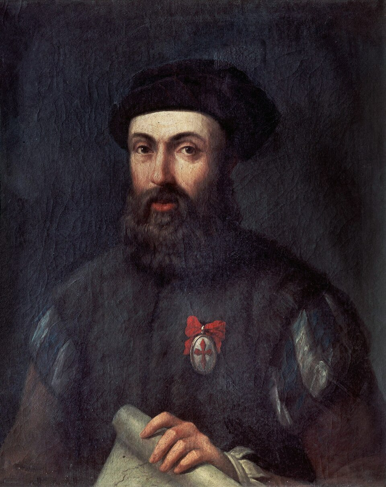

Cinco naos zarpan de Sanlúcar en busca de un paso hacia el otro mar
La armada de la Especiería, al mando del portugués Fernando de Magallanes, ha salido hoy por la barra de Sanlúcar con doscientos treinta y nueve hombres. Busca, navegando hacia poniente, un paso hacia el mar del Sur que nadie ha hallado todavía.

Con la marea de la mañana han pasado hoy la barra de Sanlúcar cinco naos: la Trinidad, que lleva el estandarte, la San Antonio, la Concepción, la Victoria y la Santiago. Los vecinos se llegaron a la playa y a las azoteas para verlas tomar la mar, las velas henchidas con el terral, y hubo salvas, plegarias y pañuelos hasta que las naves se hicieron pequeñas camino del sudoeste, la vuelta de las Canarias. Van en ellas doscientos treinta y nueve hombres: castellanos los más, y con ellos portugueses, genoveses, griegos, flamencos y gentes de otras naciones, marinería cosida de todas las orillas del mundo conocido.
Manda la armada Fernando de Magallanes, hidalgo portugués curtido en las Indias de su rey, que pasó a Castilla hace dos años despechado de su corte y ofreció al rey don Carlos lo que Portugal no quiso oírle: que las islas de la Especiería pueden alcanzarse navegando hacia poniente, por un paso o estrecho que ha de abrirse en la tierra firme descubierta, sin tocar la ruta portuguesa del cabo de Buena Esperanza. Le acompañan como capitanes Juan de Cartagena, veedor general, en la San Antonio; Gaspar de Quesada en la Concepción; Luis de Mendoza en la Victoria, y Juan Serrano en la Santiago.
La empresa se armó en Sevilla por asiento firmado con el rey, y la Casa de la Contratación ha puesto en las bodegas bizcocho para dos años, vino, tocino, habas y garbanzos, además de espejuelos, cascabeles y paños de colores para rescatar con las gentes que se hallaren. El premio que se busca vale todos los trabajos: el clavo, la canela y la nuez moscada de las islas del Maluco, que hoy llegan a Europa por manos ajenas y a precios de oro. Si el paso existe, y si las islas caen del lado de Castilla en la raya de Tordesillas, la especiería entera mudará de dueño.
No zarpa la armada sin recelos. A muchos les escuece que mande un portugués navíos de Castilla, y los capitanes castellanos no lo disimulan; el propio Juan de Cartagena lleva título de conjunta persona, que cada cual entiende a su manera, y de esas dudas pueden nacer pleitos en mares donde no hay más justicia que la del capitán general. Quedó en tierra, apartado a última hora de la empresa, el bachiller Ruy Faleiro, compañero primero de Magallanes en el proyecto. En el muelle, mujeres y niños despedían a hombres que no saben decir cuándo vuelven, porque nadie ha hecho jamás el camino que hoy comienza.
Este diario ha visto zarpar muchas armadas, pero ninguna como esta, que no va a tierra sabida sino a buscar en la mar un portillo que los mapas callan. Cinco velas se han llevado hoy la vista y algo más: la esperanza de que el mundo pueda rodearse por agua y de que Castilla alcance por poniente lo que Portugal guarda por levante. Cuántas de esas velas volverán a pasar la barra de Sanlúcar, y con cuántos de sus hombres, solo Dios lo sabe. Nosotros dejamos apuntados el día y la hora, y quedamos a la espera, aunque la espera haya de contarse por años.